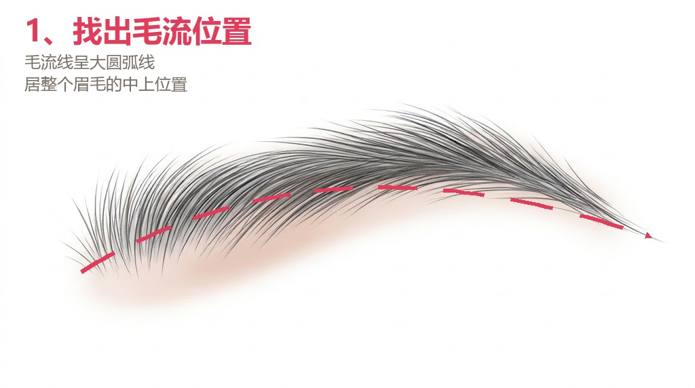
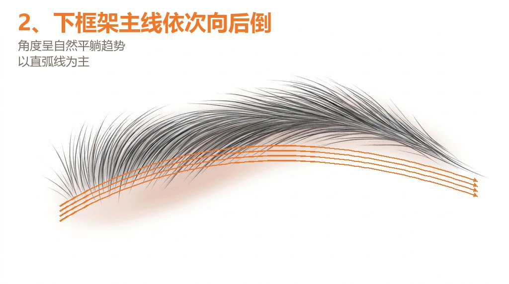
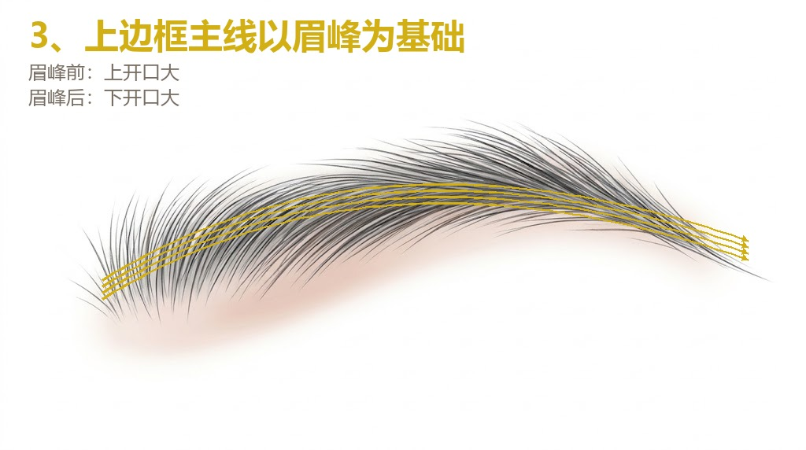
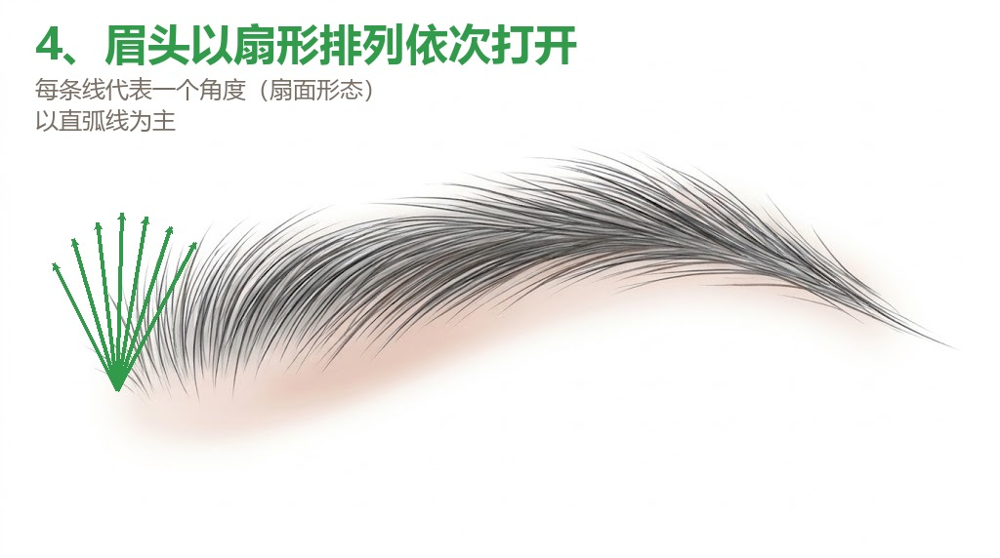
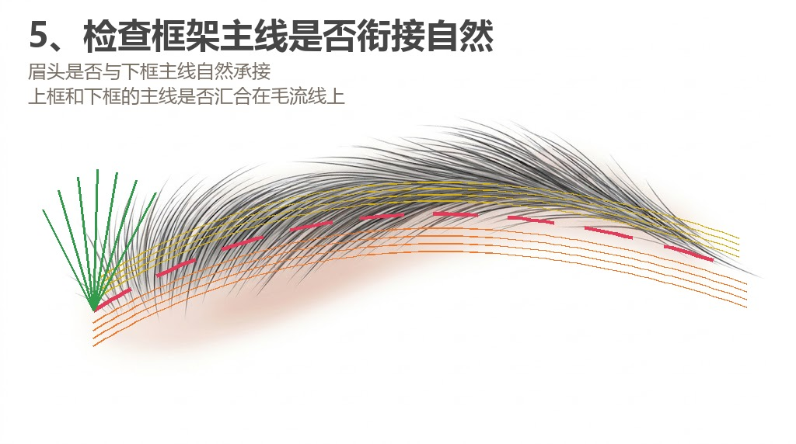
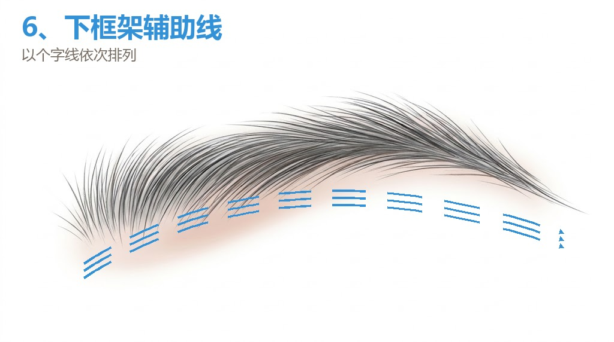
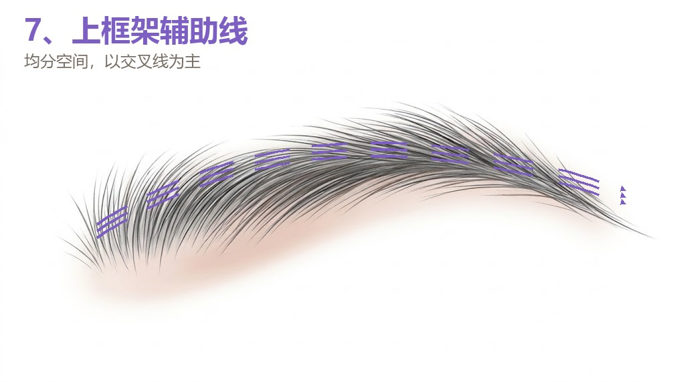
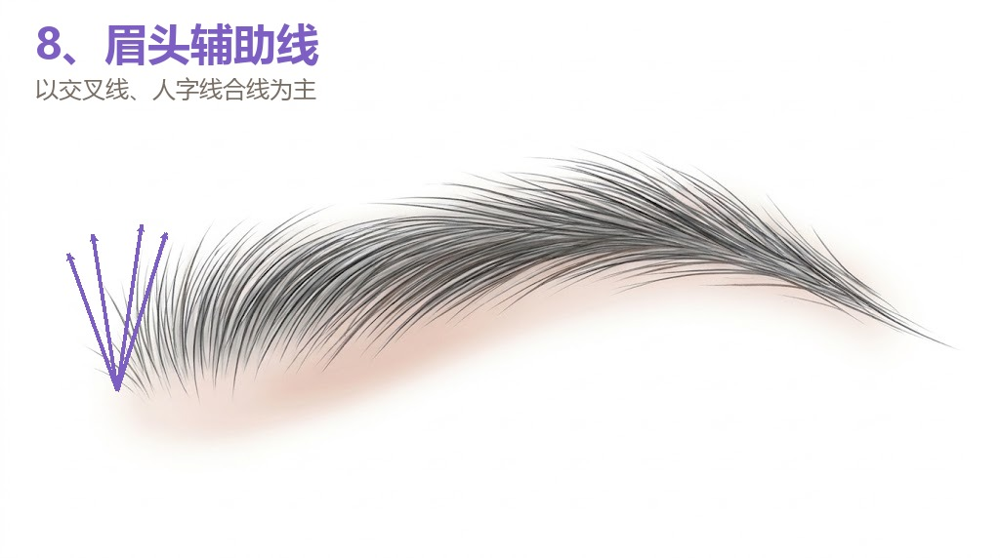
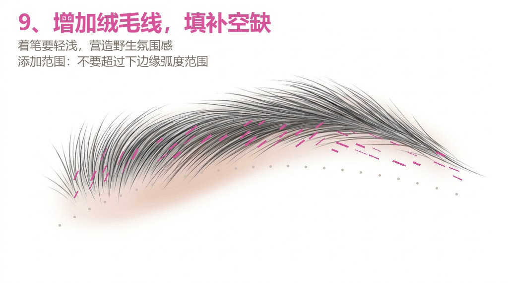

野生眉怎么画：从毛流线到绒毛线的 9 个步骤
这篇讲的是设计顺序，不是操作顺序。9 步走完，眉形就定下来了，再谈用几台机器。
每一步配一张示意图。图里的颜色只代表分组，不是要照着颜色做。
第 1 步：找出毛流线
毛流线是顺着眉毛长势的一条大圆弧，位置在整条眉毛的中上。先把它找出来，后面所有主线都围着它排。

口诀：先找中线，不急着画边框。
第 2 步：下框架主线依次向后倒
下框架主线依次向后倒，角度自然平躺，以直弧线为主。

口诀：下边一排线，顺着往后倒。
第 3 步：上边框主线以眉峰为基础
上边框主线以眉峰为基础。眉峰前上开口大，眉峰后下开口大。

口诀：上边一排线，跟着眉峰走。
第 4 步：眉头以扇形排列依次打开
眉头以扇形排列依次打开，每条线代表一个角度，以直弧线为主。

口诀：眉头像扇子，一根一个角度。
第 5 步：检查框架主线是否衔接自然
看眉头和下框主线是不是自然承接，上框和下框的主线是不是汇合在毛流线上。

口诀：先检查，再补线。
第 6 步：下框架辅助线
下框架辅助线，以个字线依次排列。

口诀：下框空的地方，用个字线补。
第 7 步：上框架辅助线
上框架辅助线，均分空间，以交叉线为主。

口诀：上框补线，均匀、交叉。
第 8 步：眉头辅助线
眉头辅助线，以交叉线、人字线合线为主。

口诀：眉头补线，交叉、人字合。
第 9 步：增加绒毛线，填补空缺
着笔要轻浅，营造野生氛围感；添加范围不要超过下边缘弧度。

口诀：有空才补，不要铺满。
9 步之后
9 步都在设计阶段完成。设计画在脸上，站远两米看比例，侧面看眉骨，自己照镜子，不满意就重画。定稿之后再谈做法。
这份记录来自上海浦东三林的描眉画目·定制美学。